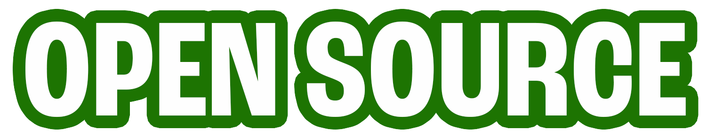
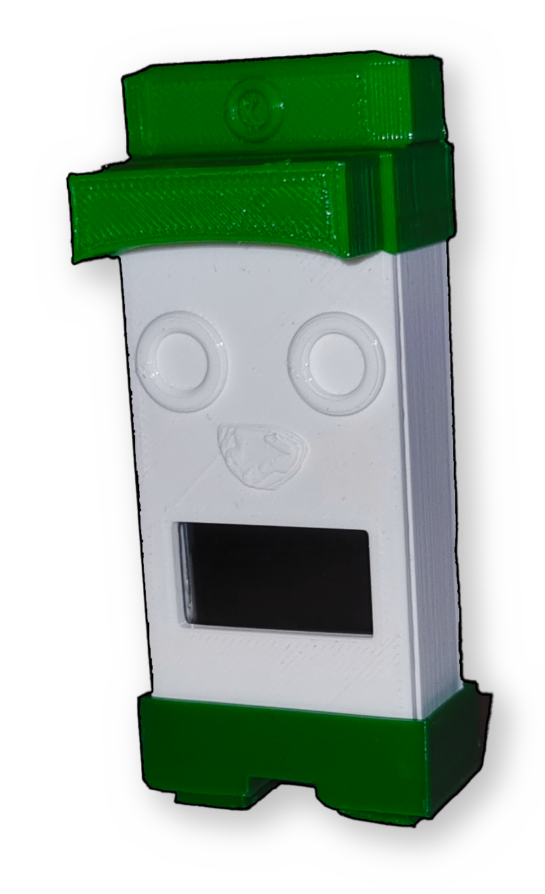

The code running on Kaplan is free and everyone can modify it. The base model of Kaplan features a ESP32 program that displays Kaplans name, but this is easy to customize and make your own. I would recommend this as a starting point to get you going.
The 3D model of Kaplan is also free and downloadable. Kaplan being showcased on this webpage was printed on a Ender S1 Pro.

- ESP32, any model that fits the 3d model
- L2C Monitor, can be found here
- Wires to connect everything
- A 3D printer (or a friend who has one)
- Filament